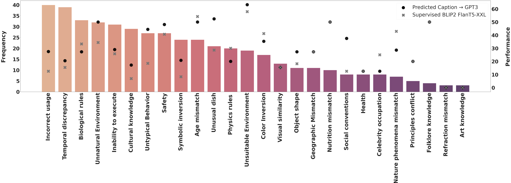

Abstract
Weird, unusual, and uncanny images pique the curiosity of observers because they challenge commonsense.
For example, an image released during the 2022 world cup depicts the famous soccer stars Lionel Messi and Cristiano Ronaldo playing chess, which playfully violates our expectation that their competition should occur on the football field.
Humans can easily recognize and interpret these unconventional images, but can AI models do the same? We introduce WHOOPS!, a new dataset and benchmark for visual commonsense. The dataset is comprised of purposefully commonsense-defying images created by designers using publicly-available image generation tools like Midjourney.
We consider several tasks posed over the dataset. In addition to image captioning, cross-modal matching, and visual question answering, we introduce a difficult explanation generation task, where models must identify and explain why a given image is unusual.
Our results show that state-of-the-art models such as GPT3 and BLIP2 still lag behind human performance on WHOOPS!. We hope our dataset will inspire the development of AI models with stronger visual commonsense reasoning abilities.
Collecting Weird Images
WHOOPS! is a dataset of 500 synthetic images and 10,874 annotations designed to challenge AI models' ability to reason about commonsense and compositionality. To construct WHOOPS!, we collaborate with designers who use text-to-image models such as Midjourney and DALL-E to generate images that would be challenging (or even impossible) to collect otherwise.
WHOOPS! contains commonsense-defying image from a wide range of reasons, deviations from expected social norms and everyday knowledge.

Using Weird Images to Create V&L Tasks
The WHOOPS! benchmark includes four tasks:
- A novel task of explanation-of-violation: generating a detailed explanation for what makes the image weird
- Generating a literal caption
- Distinguishing between detailed and underspecified captions
- Answering questions that test compositional understanding

Test Results for Explanation-of-violation
Models significantly lag behind human performance. For example, on identification, the best end-to-end fine-tuned BLIP2 FlanT5-XXL model achieves at best 73%. For explanation, even the oracle model (which is given access to a ground-truth, human-authored description of the image) only achieves a performance of 68%, falling substantially short of human performance (95%). We also added auto-eval results that are correlated with the human-eval. These results indicate that our dataset provides a challenging benchmark for the development of next-generation vision-and-language models.

Test Results for Image Captioning, Cross-Modal Matching and Visual Question Answering
The zero-shot results highlight the strengths and weaknesses of each model. Zero-shot BLIP2 demonstrates a substantial improvement over the other models. But even the supervised models have significant room for improvement, especially in VQA (maximum BEM score is 57%) and image captioning